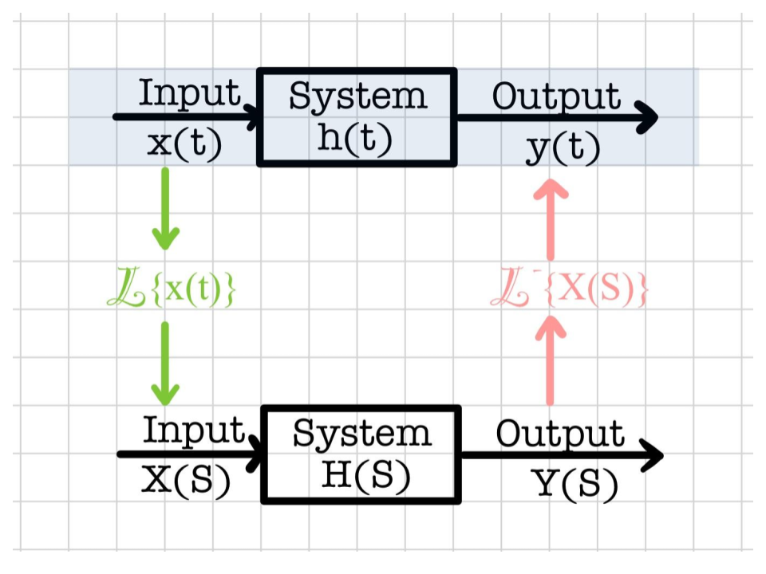
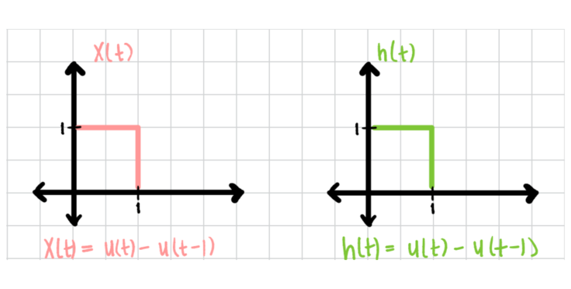
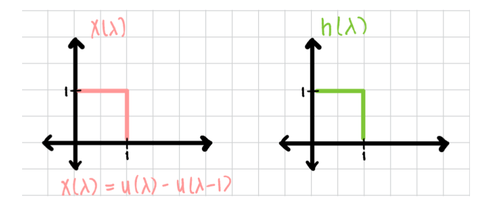
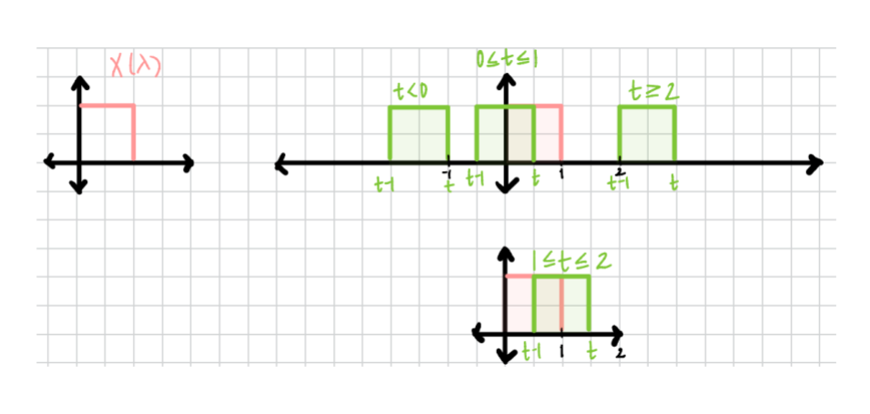
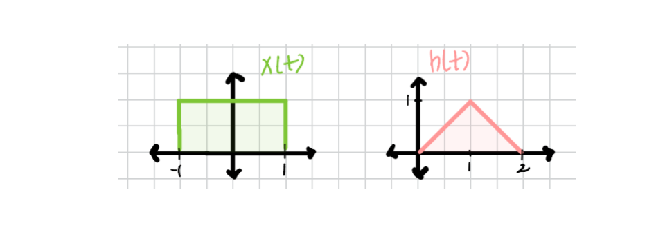
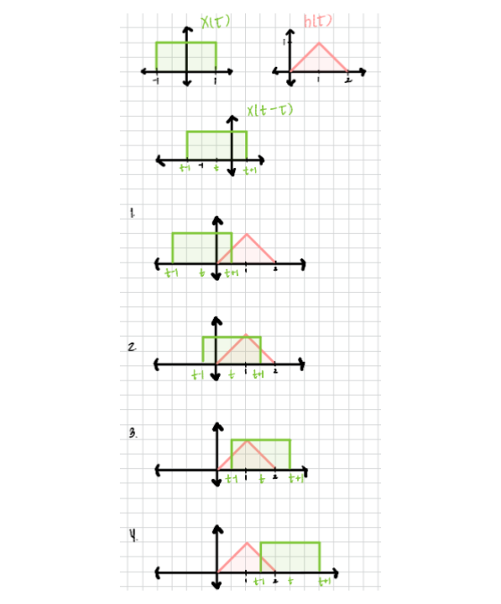
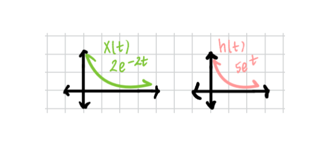
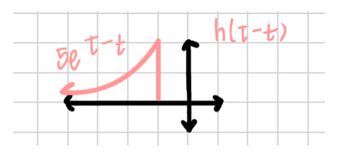
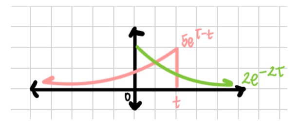

Con \(\cdot\) vo \(\cdot\) lu \(\cdot\) tion
[kahn-vuh-loo-shun] verb
-
Sudden and intense panic often experienced with academic existential crisis. -
In mathematics, convolution is a mathematical operation on two functions that produces a third function that expresses how the shape of one is modified by the other. The term convolution refers to both the result function and the computing process.
-
Remember those nifty little boxes to describe systems and signals in the Laplace Domain? You learned how to analyze signals in the Laplace domain and convert them back to the Time Domain. Now, we will analyze signals in the Time Domain using convolution.

Convolution Formula:
\[\int_{-\infty}^{\infty} x(\lambda)*h(t - \lambda)d\lambda\]
Note: \(\lambda\) is an arbitrarily chosen variable. The \(\lambda\)’s could all be replaced with \(\tau\)’s without affecting the convolution formula.
Using the formula:
- Change all the t’s to\(\lambda\)’s
- Choose the easier-looking signal and flip it about the y-axis. \(h(\lambda)\) will become \(h(-\lambda)\)
- Shifting: Shift \(h(-\lambda)\) to the left: \[\lambda = \lambda - t\] \[h(-(\lambda -t))\] \[h(t-\lambda)\]
- Multiplication: Find the product of \(x(t)\) and\(h(t-\lambda)\)
- Integration: For a given time integral on t, calculate the area under the product \[x(\lambda)* h(t-\lambda)\] for 0 < λ < t to get y(t) at t.
Important Properties of Convolution:
-
Communicative property:\(x(t)*h(t) = h(t)*x(t)\)
-
Distributive Property:\(f(t)*[x(t) + y(t)] = f(t) * x(t) + f(t) * y(t)\)
-
Associative Property:\(f(t)*[x(t) + y(t)] = [x(t) + y(t)]*f(t)\)
4.\(f(t)*\delta(t) = \int_{-\infty}^{\infty} f(\lambda)*\delta(t - \lambda)d\lambda = f(t)\)
5.\(f(t)*\delta(t-t_0) = f(t-t_0)\)
6.\(f(t)*\delta’(t) = \int_{-\infty}^{\infty} f(\lambda)*\delta’(t - \lambda)d\lambda = f’(t)\)
7.\(f(t)*u(t) = \int_{-\infty}^{\infty} f(\lambda)* u(t - \lambda)d\lambda = \int_{-\infty}^t f(\lambda)d\lambda\)
Example #1:
Let’s try an easy example! Find \(y(t) = x(t)*y(t)\) given, \(x(t) = u(t) - u(t-1)\) and \(h(t) = u(t)-u(t-1)\)

- Change t’s to \(\lambda\)’s:

2.Choose one signal: Flip and Shift - Since both signals are the same, we will choose the green signal \(h(\lambda)\). Combining steps two and three.

- Here the product will be the heights, recall we are integrating to find the area under the product. Note: Here both heights are 1.
- Integration: For a given time integral on t, calculate the area under the product \[x(\lambda)* h(t-\lambda)\] for 0 < λ < t to get y(t) at t.

Case 1: Since t is less than zero, the integration will be \(0\) because there is no area to calculate. \[t < 0, y(t) = 0\]
Case 2 Here you can see that \(h(t-\lambda)\) has entered \(h(t)\), and \(0 \leqslant t \leqslant 1\). The interval will only consist of the area in which both signals coexist and so the integral can be taken as \(0\) to \(t\). You might be wondering why \(0\) to \(t\), but if you look closely the area of coexistence starts at \(0\) and ends at \(t\).
\[y(t) = \int_0^t x(\lambda) * h(t-\lambda)d\lambda\]
\[y(t) = \int_0^t 1*1d\lambda\]
\[y(t) = t\]
Note: don’t be fooled! if one of these signals was flipped about the x-axis there would still be an area to calculate. They would not cancel out.
Case 3: Here you can see that \(h(t-\lambda)\) is now leaving \(h(t)\), and \(1 \leqslant t \leqslant 2\). The integral can be taken as the area of \(t-1\) to \(1\).
\[y(t) = \int_{t-1}^1 x(\lambda) * h(t-\lambda)d\lambda\]
\[y(t) = \int_{t-1}^1 1*1d\lambda\]
\[y(t) = -t+2\]
Case 4: t is now greater than or equal to two, the integration will be 0 because there is no area to calculate. \[t \geqslant 2, y(t) = 0\]
See that wasn’t too bad, let’s try something a little more difficult.
Example #2:
Let’s try something a little more difficult! Find \(y(t) = x(t)*h(t)\) for the functions below.

Remember we need to pick the easier signal, here we will choose \(x(t)\) as the easier signal. Then we will repeat the steps practiced in example 1: Replace the t’s, flip, shift, and find the intervals for integration. Let’s draw it out!
There is one thing different we will do here, take a look at \(h(\tau)\). It’s a triangle and has a slope \(\tau\) and \(2-\tau\). You will need these slopes for the integration.

The integral for this problem will look like this:\(\int_{-\infty}^\infty h(\tau)*x(t-\tau)d\tau\)
Case 1: \(-1 \leqslant t \leqslant 0\) \[y(t) = \int_0^{t+1} \tau(1)d\tau\] \[y(t) = \frac{(t+1)}{2} ^2\]
Case 2: \(0 \leqslant t \leqslant 1\) \[y(t) = \int_0^1 \tau(1)d\tau + \int_1^{t+1} (2-\tau)(1)d\tau\] \[=\frac {\tau^2}{2}]_0^1 + \frac{(2-\tau)^2}{2}]_1^{t+1}\] \[y(t) = \frac{1}{2}+\frac{(2-t+1^2)}{2}+\frac{1}{2}\]
Case 3: \(1 \leqslant t \leqslant 2\) \[y(t) = \int_{t-1}^1 \tau(1)d\tau + \int_1^2 (2-\tau)(1)d\tau\] \[= \frac {\tau^2}{2}]_{t-1}^1 + \frac{(2-\tau)^2}{2}]_1^2\] \[y(t) = \frac{1}{2} - \frac{(t-1)^2}{2} + \frac{1}{2}\]
Case 4: \(2 \leqslant t \leqslant 3\) \[\int_{t-1}^2 (2-\tau)(1)d\tau\] \[= \frac{(t-1)^2}{2}]_{t-1}^2\] \[y(t) = \frac{(2-t+1)^2}{2} = \frac{(3-\tau^2)}{2}\] Note: All other cases are y(t) = 0 because there is no area to calculate between the two signals.
Let’s take a look at something more interesting! This example is more food for thought. It’s a great chance to try it on your own.
EXAMPLE 3:
Let’s consider the case where our signals are exponential! Find \(y(t) = x(t)*h(t)\) for the functions below

Don’t be discouraged! Since both the signals look the same let’s flip and shift\(h(t)\)

Hmmm, what do you think might happen when \(h(\tau - t)\) enters \(x(\tau)\) ? Let’s take a look:

Try to find the interval for integration. Hint: There is only one integral to perform, take a close look, and you’ll notice that the tail of either exponential goes to \(\infty\).
Here is the final answer:\(y(t) = -10e^-2t+10e^-t\)
Note: You can always check your answers using Laplace, the answers will always be the same whether you perform Laplace or Convolution